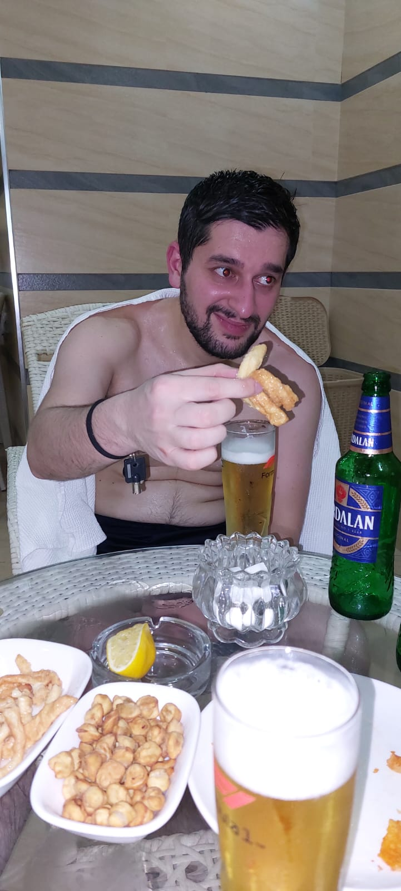

Габилька — живой синоним слова "катастрофа"
• Опоздал.
• Забыл.
• Перепутал.
• Обиделся.
• Сделал вид, что всё так и планировалось.
• Рассказал шутку и только сам посмеялся.
• Всё равно умудрился испортить момент.
